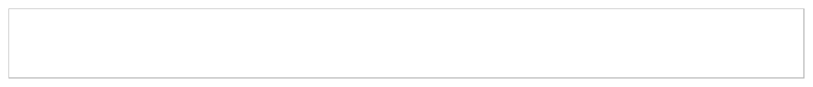

overview
docxtools is a small set of helper functions for using R Markdown to create documents in docx format, especially documents for use in a classroom or workshop setting. These are particularly useful when one tries to does one own’s work reproducibly but has collaborators who work with Office software exclusively.
-
format_engr()to apply engineering format to numbers
-
align_pander()to print a table of numbers using pander -
put_gap()to create white space in a document -
put_axes()to place unlabeled axes in a document
usage
library(docxtools)
set.seed(20170913)
n <- 5
a <- sample(letters, n)
b <- sample(letters, n)
w <- runif(n, min = -5, max = 50) * 1e+5
y <- runif(n, min = -25, max = 40) / 1e+3
z <- runif(n, min = -5, max = 100)
x <- data.frame(w, a, y, b, z, stringsAsFactors = FALSE)
output <- format_engr(x, sigdig = c(3, 4, 5))
output
#> w a y b z
#> 1 ${327}\\times 10^{3}$ f ${-21.43}\\times 10^{-3}$ j $26.425$
#> 2 ${3.35}\\times 10^{6}$ o ${32.69}\\times 10^{-3}$ u $88.005$
#> 3 ${1.70}\\times 10^{6}$ a ${4.895}\\times 10^{-3}$ b $80.499$
#> 4 ${1.02}\\times 10^{6}$ q ${6.986}\\times 10^{-3}$ y $93.280$
#> 5 ${1.80}\\times 10^{6}$ w ${-13.86}\\times 10^{-3}$ v $37.444$
align_pander(output, align_idx = "rcrcr")| w | a | y | b | z |
|---|---|---|---|---|
| \({327}\times 10^{3}\) | f | \({-21.43}\times 10^{-3}\) | j | \(26.425\) |
| \({3.35}\times 10^{6}\) | o | \({32.69}\times 10^{-3}\) | u | \(88.005\) |
| \({1.70}\times 10^{6}\) | a | \({4.895}\times 10^{-3}\) | b | \(80.499\) |
| \({1.02}\times 10^{6}\) | q | \({6.986}\times 10^{-3}\) | y | \(93.280\) |
| \({1.80}\times 10^{6}\) | w | \({-13.86}\times 10^{-3}\) | v | \(37.444\) |
Using put_gap() with knitr and R markdown, the gap height is specified in the R code-chunk header.
```{r fig.height = 0.75}
# a gap with a border
put_gap(col = "gray", fill = NULL)
```
For put_axes() with knitr and R markdown, the axis height is specified in the R code-chunk header.
```{r fig.height = 2}
# first quadrant axes
put_axes(1, col = "blue", size = 2)
```License: MIT + File LICENSE
Richard Layton